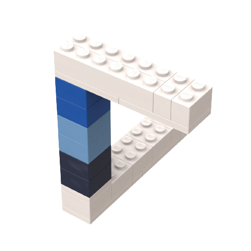
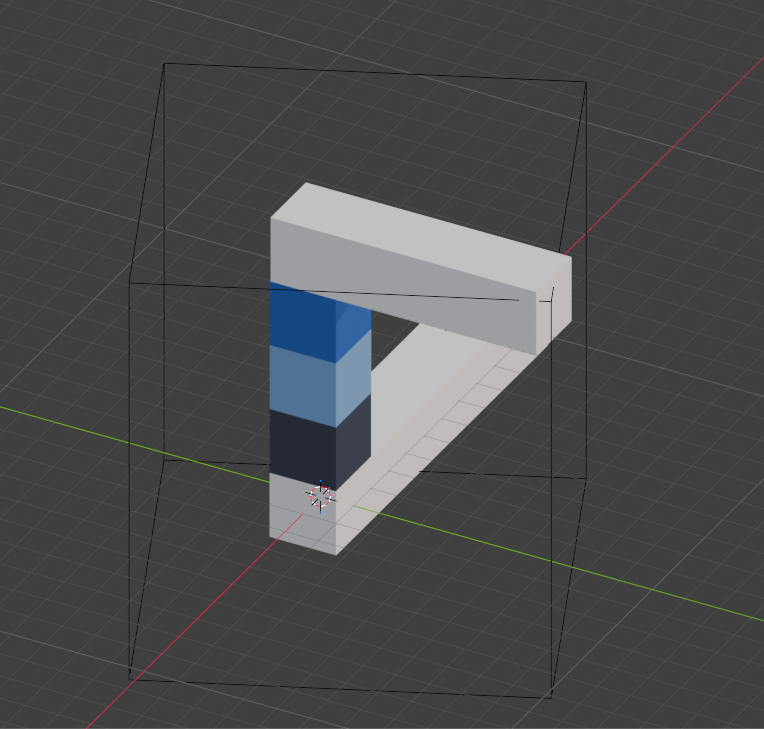

前回のあらすじ：絵は描けないが、blenderならできるかも？ と思い立った田村。ひとまず、初心者向けの教本を終え、基本操作を習得する。
今日は、前回のコラムで勢いをつけて書いた部分――「どうして自分の本の挿絵をblenderで作りたいと思ったのか」――を改めて振り返ってみよう。それをコラムの始まりとして置くのが、なんとなく正しい気がするから。
blenderで作った絵を挿絵にするのは、きつすぎず、簡単すぎない、ちょうどいい目標だと思ったから―― それに尽きる。
目標設定というのはとてもたいせつなことで、わたしのようにしょっちゅう新しい趣味を探していたり、下手の横好きでもいろいろ自分でやってみたいと思ったりすることのある人間にとっては、切っても切り離せない工程のひとつだ。最初のうちは真新しい情報を頭に入れるのが楽しくて続けられるが、それをひと月、半年とやっていくにはモチベーションが下がってしまう。そういうときに、当初の目標に立ち返れるとちょっとましになる気がする。目標を立てる際はすでに自分がスムーズにできていること・大事にしていることとリンクさせるのがよく、そうなるとわたしの場合は「すでに制作しようとしている本」とリンクさせるのが適切だろうと思った。
ちなみに、わたしは小説もたまに書くのだが、小説の舞台をblenderで表現する、というのもそのうちやってみたいと思っている。でもそれはかなりの難易度で、初心者向けではないと思ったので、今回はそこには目標を置かないことにした。とにかくわたしが今回作るのは、「本の挿絵」である。
本の挿絵といっても、まだわたしの手元には仕上がった原稿がない。（そりゃそうだ、今書いているこれに大量の加筆修正を加えて一冊の本にしようとしているのだから。）だから、汎用性の高いものを作るほうがいい。作るのが簡単で、汎用性が高いもの―― それを考えて、思いついた。「わたしのアイコンを作ろう」と。

わたしが数年前から自分のアイコンとして使っている、ペンローズの三角形風のアイコンである。青と白で構成されており、シンプルな形だ。何より、これはもともとわたしがレゴで作ったものだった。手で作れるものなので、デジタルでも立方体を重ねて作れば同じようなものが再現できると思う。これは実用的だし、何より作りたいと思った！ ペンローズの三角形をぐるぐる回して、この三角形が錯視図形であるところも見てもらったらよりおもしろい。
そして、せっかく回すのであれば、それを紙の本を手に取った人にも感じてもらいたい。たとえば、小学生のときに自由帳の隅に描いたパラパラ漫画みたいに、わたしのアイコンをぐるぐる回したら？ わたしは子どもの頃の本にパラパラ漫画が配置されていると、それを何度も何度も試して遊ぶのが止まらなかった。そんなものを作りたい。作りたい！ と自分の中の小学生が叫んでいるのを感じた。というわけで、わたしの目標は、「わたし（田村）のアイコン・ペンローズの三角形を作り、アニメーションで回すこと」ということになった。
幸い、わたしのアイコンのモデリングは非常に簡単で、これは15分くらいで終わった。同じ形をレゴで組み立てたことがあるので、どこにどの数の立方体を置けばいいか大体分かる。試行錯誤はまったく必要なかった。

あまりのモデリングの簡単さに、正直いって拍子抜けした。これはだいぶ簡単なプロジェクトなのではないか。だって、あとはこれを回転させるだけだ。……それが大変だった。
次回（3）に続く！